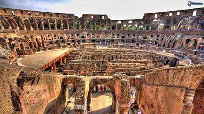
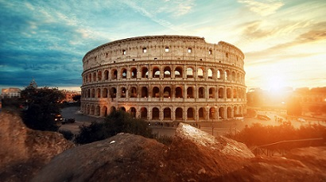
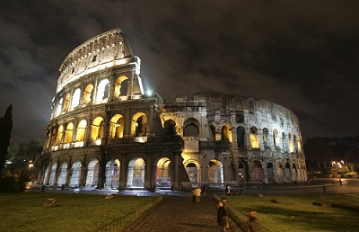

Coliseo Romano
El Coliseo o Anfiteatro Flavio es un anfiteatro de la época del Imperio romano, construido en el siglo I y ubicado en el centro de la ciudad de Roma.
Su denominación original, Anfiteatro Flavio, hace referencia a la dinastía Flavia de emperadores que lo construyó; su nombre posterior, Coliseo, y por el que es más conocido en la actualidad, se debe a una gran estatua que había cerca, el Coloso de Nerón, que no ha llegado hasta nosotros.
Por su conservación e historia, el Coliseo es uno de los monumentos más famosos de la Antigüedad clásica. Fue declarado Patrimonio de la Humanidad en 1980 por la Unesco y una de Las Nuevas Siete Maravillas del Mundo Moderno el 7 de julio de 2007.


Construcción
Las obras del Coliseo empezaron bajo el mandato del emperador Vespasiano, entre 70 y 72 d. C. El emplazamiento elegido era un llano entre las colinas de Celio, Esquilino y Palatino, a través del cual fluía una corriente canalizada. El emplazamiento donde se construyó el anfiteatro había sido devastado años atrás por el Gran Incendio de Roma en 64 d. C., y aprovechando esta circunstancia, Nerón se apropió de gran parte del terreno para edificar su residencia: la grandiosa Domus Aurea.
En ella ordenó construir una laguna artificial, la Stagnum Neronis, rodeada de jardines y pórticos. El ya existente acueducto de Aqua Claudia se amplió para que llegara hasta esa zona, y la gigantesca estatua de bronce conocida como el Coloso de Nerón se colocó al lado de la entrada de la Domus Aurea. De esta estatua recibe el anfiteatro el nombre de coliseo.
Actualidad
En 1980, la Unesco declaró el centro histórico de Roma, incluido el Coliseo, Patrimonio de la Humanidad.10 Desde 2000, las autoridades mantienen el edificio iluminado durante 48 horas cada vez que en algún lugar del mundo se le conmuta o aplaza una sentencia de muerte a un condenado.
Aunque la estructura está seriamente dañada debido a los terremotos y los picapedreros, el Coliseo siempre ha sido visto como un icono de la Roma Imperial y es uno de los ejemplos mejor conservados de la arquitectura romana. Es una de las atracciones turísticas más populares de la moderna Roma y aún está muy ligado a la Iglesia católica, por lo que el papa encabeza el viacrucis hasta el anfiteatro cada Viernes Santo.
